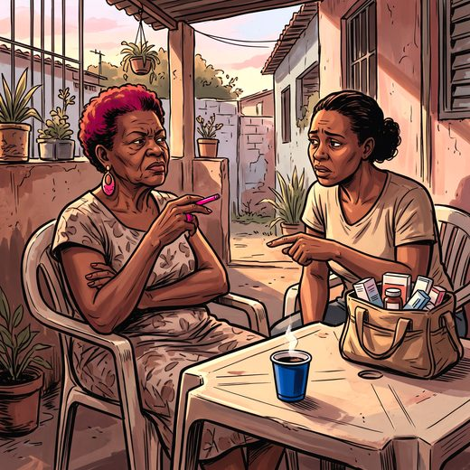

Consulta rápida à beira do leito
Condutas, doses e interações.
Referências da aula · 11
- Suemoto CK, Borelli WV, Castilhos RM, et al. The potential for dementia prevention in Brazil: a population attributable fraction calculation for 14 modifiable risk factors (ELSI-Brasil). Lancet Reg Health Am. 2025;49:101209. doi:10.1016/j.lana.2025.101209. PMID 40823285.PubMedDOI
- Livingston G, Huntley J, Liu KY, et al. Dementia prevention, intervention, and care: 2024 report of the Lancet standing Commission. Lancet. 2024;404:572-628. PMID 39096926. doi:10.1016/S0140-6736(24)01296-0.PubMedDOI
- Bushnell C, Kernan WN, Sharrief AZ, et al. 2024 Guideline for the Primary Prevention of Stroke: a guideline from the American Heart Association/American Stroke Association. Stroke. 2024;55(12):e344-424. PMID 39429201. doi:10.1161/STR.0000000000000475.PubMedDOI
- Van Gelder IC, Rienstra M, Bunting KV, et al. 2024 ESC Guidelines for the management of atrial fibrillation developed in collaboration with EACTS. Eur Heart J. 2024;45(36):3314-414. PMID 39210723. doi:10.1093/eurheartj/ehae176.PubMedDOI
- Brandão AA, Rodrigues CIS, Bortolotto LA, et al. Diretriz Brasileira de Hipertensão Arterial – 2025. Arq Bras Cardiol. 2025;122(9):e20250624. PMID 41294179. doi:10.36660/abc.20250624.PubMedDOI
- Williamson JD, Pajewski NM, Auchus AP, et al. Effect of intensive vs standard blood pressure control on probable dementia: a randomized clinical trial. JAMA. 2019;321(6):553-61. PMID 30688979. doi:10.1001/jama.2018.21442.PubMedDOI
- Nasrallah IM, Pajewski NM, Auchus AP, et al. Association of intensive vs standard blood pressure control with cerebral white matter lesions. JAMA. 2019;322(6):524-34. PMID 31408137. doi:10.1001/jama.2019.10551.PubMedDOI
- Ngandu T, Lehtisalo J, Solomon A, et al. A 2 year multidomain intervention of diet, exercise, cognitive training, and vascular risk monitoring versus control to prevent cognitive decline in at-risk elderly people (FINGER): a randomised controlled trial. Lancet. 2015;385(9984):2255-63. PMID 25771249. doi:10.1016/S0140-6736(15)60461-5.PubMedDOI
- American Geriatrics Society 2023 updated AGS Beers Criteria® for potentially inappropriate medication use in older adults. J Am Geriatr Soc. 2023;71(7):2052-81. PMID 37139824. doi:10.1111/jgs.18372.PubMedDOI
- Skrobot OA, Black SE, Chen C, et al. Progress toward standardized diagnosis of vascular cognitive impairment: guidelines from the VICCCS. Alzheimers Dement. 2018;14(3):280-92. PMID 29055812. doi:10.1016/j.jalz.2017.09.007.PubMedDOI
- VasCog-2-WSO Criteria Consortium; Sachdev PS, et al. Revised diagnostic criteria for vascular cognitive impairment and dementia: the VasCog-2-WSO criteria. JAMA Neurol. 2025;82(11):1103-12. PMID 40955506. doi:10.1001/jamaneurol.2025.3242.PubMedDOI